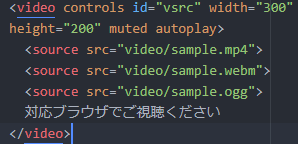

問１:width属性を使用可能な要素をすべて選べ。
1.canvas要素 2.div要素 3.img要素 4.audio要素 5.video要素
- 答え:１、３、５
問２:以下の要素の中からトランスペアレントをすべて選べ。
1.a要素 2.del要素 3.span要素 4.blockquote要素 5.ins要素
答え:１、２、５
問３:文字コードとその特徴について正しく説明しているものをすべて選べ。
- Shift_JIS...通称「JISコード」。主に電子メールで使用される日本語用の文字コードである。
- EUC_JP...UNIXで日本語表示を行う目的で作られた文字コードである。
- UTF-8...世界的にも最もポピュラーな文字コードで、Unicode用の符号化方式の1つである。
- ISO_2022_JP...MS-DOSで日本語用文字コードとして採用されたため普及した文字コードである。
- meiryo...san-serif系であり、Chromeのデフォルトの文字コードである。
答え:２、３
問４:画像ファイルフォーマットとその特徴について正しく説明しているものをすべて選べ。
- JPEG...24ビット(1670万色)までの色が使用可能で非可逆圧縮性フォーマットである。写真などの表現に適している。
- PNG...GIFに替わり開発された可逆圧縮性フォーマットである。アニメーション機能はないが指定した１色を透過可能。
- GIF...8ビット(256色)までの色が使用可能な可逆圧縮性フォーマットで、イラスト向き。アニメーションが作成可能。
- BMP...Windowsの標準的な画像ファイル形式で、ビットマップ画像を保存するための形式。色はモノクロ、16色、256色、1677万色までをサポートしている。
- SVG...画像を点の座標とそれを結ぶ線で表現するラスター形式であり、拡大縮小しても画質が損なわれない、表示領域や解像度に依存されにくいなどのメリットがる。
答え:１、３、４
問５:以下のAPIとその機能の組み合わせについて正しいものをすべて選べ。
- Geolocation API...現在地の緯度、経度の取得、およびその精度も取得することが出来る。
- canvas API...canvas要素内にXMLタグを使用することで、SVG形式の画像を描画することが出来る。
- WebSocket API...socket通信を用いて双方向通信を実現することで、リアルタイムにビデオチャットやファイル共有することが出来る。
- Application cache...オフラインでもWebページを閲覧することが出来る。Webページに更新があった場合は自動的にでキャッシュが更新される。
- XMLHttpRequest...画面遷移を伴わずにスクリプトからhttpリクエストを送信することが出来る。
答え:１、５
問６:次のソースコードにおける動作として正しいものを１つ選べ。

- デフォルトでコントローラが表示される。
- デフォルトで音声はミュートされておりユーザはミュートを解除できない。
- １つ目の動画が終わると自動的に２つ目の動画が再生される。
- 動画再生中に画面下に「対応ブラウザでご視聴ください」と表示される。
- videoタグ内にsrc属性がないためそもそも再生できない。
答え:１
問７:link要素の記述として正しくないものをすべて選べ。
- <link rel="stylesheet" href="style.css">
- <link href="css/style.css">
- <link rel="stylesheet" src="style.css">
- <link rel="author" href="author.html">
- <link rel="apple-touch-icon" href="images/sample.png">
答え:２、３